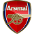

TIMES
Provável Escalação
por FabioVascão
Atualizado em 14/Outubro/2022
Arsenal
Ultimas Notícias
Emile Smith Rowe (lesão na virilha) e Mohamed Elneny (lesão na coxa) permanecem de fora antes da viagem a Leeds, enquanto mais notícias são aguardadas sobre Oleksandr Zinchenko depois que ele perdeu a vitória sobre o Liverpool com um problema na panturrilha, o internacional ucraniano não foi visto em treinamento desde então. Enquanto isso, Gabriel Jesus foi omitido da equipe da Liga Europa na noite de quinta-feira, embora as palavras de Mikel Arteta ("Sentimos que, com tudo o que ele passou nas últimas semanas, seria melhor ele ficar em casa") sugerir que não há questão de aptidão. Qualquer lesão não declarada ou uma recuperação de Zinchenko à parte, podemos esperar ver o mesmo onze inicial que jogou contra o Liverpool entrar em campo novamente neste fim de semana. Dez dos 11 titulares da 10 Rodada tiveram menos de 70 minutos ou descansaram completamente para a vitória no meio da semana sobre Bodo/Glimt (William Saliba foi a exceção), com jogadores marginais como Matt Turner, Albert Sambi Lokonga, Fabio Vieira, Eddie Nketiah, Reiss Nelson e Rob Holding, em vez disso, ficaram com as eliminatórias estendidas da Europa League. O fato de Kieran Tierney ter durado 90 minutos, enquanto Takehiro Tomiyasu foi suplente, também talvez sugira que este último mantenha seu lugar na lateral-esquerda no caso de Zinchenko ainda ficar de fora.